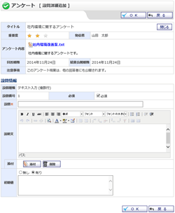
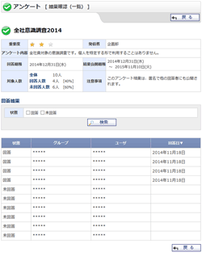
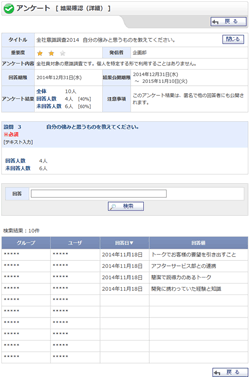

アンケート [受信]
アンケート [受信 未回答]
アンケート [受信 回答済]
アンケート [発信]
アンケート [発信 未公開]
アンケート [発信 公開]
アンケート [発信 回答完了]
アンケート [発信 公開完了]
アンケート [草稿]
アンケート 回答
アンケート プレビュー
アンケート プレビュー(共有テンプレート)
アンケート 回答確認
アンケート 回答済アンケート確認
アンケート 新規作成
アンケート 編集
アンケート テンプレート新規作成
アンケート テンプレート編集
アンケート 編集(草稿)
設問詳細追加・編集(コメント)
設問詳細追加・編集(単一選択)
設問詳細追加・編集(複数選択)
設問詳細追加・編集(テキスト入力)
設問詳細追加・編集(テキスト入力(複数行))
設問詳細追加・編集(数値入力)
設問詳細追加・編集(日付入力)
共有テンプレート
アンケート 結果確認
アンケート 結果確認(一覧)
アンケート 結果確認(一覧) 匿名
アンケート 結果確認(詳細) 単一選択
アンケート 結果確認(詳細) 単一選択・匿名
アンケート 結果確認(詳細) 複数選択
アンケート 結果確認(詳細) 複数選択・匿名
アンケート 結果確認(詳細) テキスト入力
アンケート 結果確認(詳細) テキスト入力・匿名
アンケート 結果確認(詳細) テキスト入力(複数行)
アンケート 結果確認(詳細) テキスト入力(複数行)・匿名
アンケート 結果確認(詳細) 数値入力
アンケート 結果確認(詳細) 数値入力・匿名
アンケート 結果確認(詳細) 日付入力
アンケート 結果確認(詳細) 日付入力・匿名
個人設定
表示設定
メイン表示設定
管理者設定
アンケート発信対象者設定
アンケート発信対象者設定確認
アンケート種類設定
アンケート種類設定確認
アンケート自動削除
アンケート自動削除確認
アンケート手動削除
アンケート手動削除確認
発信アンケート管理
![アンケート [受信]](../../enquete/help/images/scr_help_enq010000.gif)
![アンケート [発信]](../../enquete/help/images/scr_help_enq010100.gif)
![アンケート [草稿]](../../enquete/help/images/scr_help_enq010200.gif)